Tågerup
Grobkörniger, rötlicher Granit
Größte Höhe: 156 cm
Größte Breite: 146 cm
Dicke ca.: 32 cm
Runenhöhe: 10,5 - 19 cm
Runeninschrift :
Øystæins Söhne errichteten diesen Stein nach Spærla, ihrem Bruder, Schiffsmann bei Æsbjörn Schnabel.

105 - Tågerup - Letztes Update 30.07.2024
Listennummer : DR 218 / DK SJy 5
Navidaten: 54.67942, 11.45159 oder: Tågerupvej 2A, 4970 Rødby, Dänemark
Transliteration: : austains : suniR : | : raisþu : stain | þansi : | : aft : | : sbarlu : bruþur : sin : | : skibara : ąsbiarnaR : | : nafs :
Dies ist ein Luftfoto vom 19.05.2023 von Skråfoto, das die Kirche von Tågerup zeigt (Bild zugeschnitten / Standort Runenstein von mir rot umrandet). Skråfoto ist eine Webanwendung, die von der Dänische Agentur für Datenversorgung und Infrastruktur weltweit kostenlos bereitgestellt wird - frei von Urheberrechten. Die Aufnahmen werden alle zwei Jahre erneuert und neben einer Senkrechtaufnahme wird ein Schrägbild aus jeder Himmelsrichtung angeboten, das man über eine Adresssuche aufrufen kann.
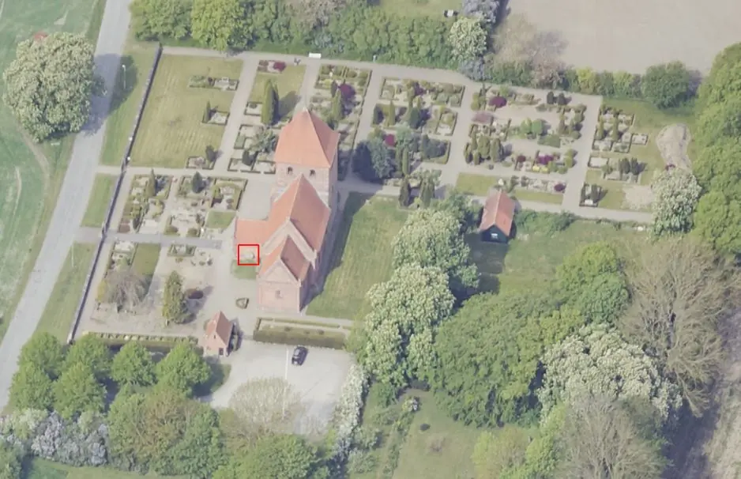
Der Stein fand sich am 25.03.1868 auf einem zum Tågerup Pfarrhof gehörenden Acker (Bjerremark), zwischen Hyldtofte und der Ostsee, ca. 6 km nordöstlich von Rødby Fährhafen. Auf dieser historischen Landkarte von 1816 kann man sich vielleicht einen besseren Eindruck von der Region verschaffen.
Da der Stein mit der Inschrift nach unten lag, entdeckte man die Runeninschrift erst, als ein Steinhauer ihn schon gespalten und danach gewendet hatte. Die Steinstücke wurden daraufhin zur Tågerup Kirche gebracht und dort wieder zusammengesetzt. 1869 wurde er an der Außenmauer des Waffenhauses aufgemauert, so dass die Runenlinien waagrecht verlaufen. So liegt er dort noch heute.
Der Runenstein fällt vor allem durch seine ungewöhnliche Form auf, denn er ist ziemlich rund gehauen worden, während man ansonsten die Steine meistens weitgehend unbearbeitet ließ und allenfalls die Schriftfläche glättete.
Die Entstehung der Inschrift wird auf die Zeit zwischen 970 und 1020 geschätzt.
Die Inschrift - bis auf die unterste Zeile hat jede einen eigenen Rahmen erhalten - wird wie folgt gelesen (von mir aufbereitet):
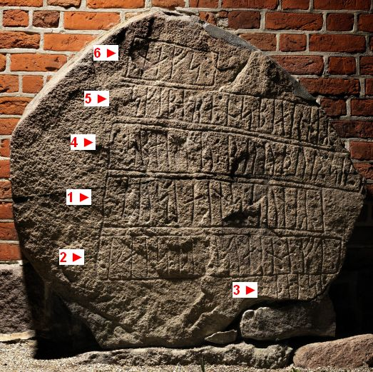
Lizenz: CC-BY-SA - Foto von Roberto Fortuna aus: Digitale Sammlung Nationalmuseum KopenhagenAm Mittwoch, 31.08.2016, fand ich mal wieder den Weg nach Tågerup, um dem Runenstein bei der Kirche einen Besuch abzustatten. Dabei habe ich diese Fotos aufgenommen:
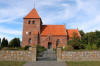 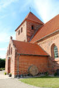 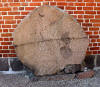 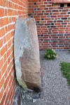 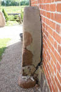


Erstmals war ich am Montag, 08.08.1988, vor Ort. Damals habe ich dieses Foto als Dia gemacht, dass ich inzwischen habe digitalisieren lassen.
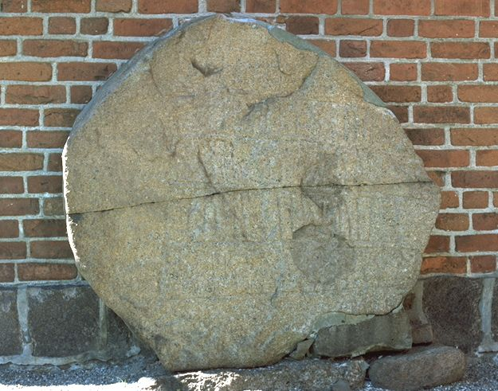
Danach war ich nochmals am Dienstag, 24.05.2005, vor Ort und dann erst wieder in 2016.
P. G. Thorsen (*07.08.1811 - 06.05.1883, Bibliothekar, Runenforscher und Historiker)
 Bildquelle: Fotografie
zw. 1863-1883 von Fotograf Budtz Müller (*26.12.1837 -
30.12.1884) -
Det Kgl. Biblioteks billedsamling
- Lizenz:
Public Domain
Bildquelle: Fotografie
zw. 1863-1883 von Fotograf Budtz Müller (*26.12.1837 -
30.12.1884) -
Det Kgl. Biblioteks billedsamling
- Lizenz:
Public Domain
hat seine Beschreibung zu dem Runenstein in seinem Werk "De danske runemindesmærker beskrevne og forklarede, anden Afdeling, Jyllands Runemindesmærker, II. Text, 1880" auf der S. 268/269 wiedergegeben.
Die u.a. Zeichnung, die Magnus Petersen (*04.09.1827 - 01.02.1917, Archäologischer Zeichner und Restaurator)
 Bildquelle:
Fotografie von 1903 von Fotograf Marius Christensen
(*24.6.1874 -
25.6.1907) -
Det Kgl. Biblioteks billedsamling - Lizenz:
Public Domain
Bildquelle:
Fotografie von 1903 von Fotograf Marius Christensen
(*24.6.1874 -
25.6.1907) -
Det Kgl. Biblioteks billedsamling - Lizenz:
Public Domain
im Auftrag von P. G. Thorsen angefertigt hat, findet sich in dem 1879 zuvor erschienenen Buch, nämlich in "Jyllands Runemindesmærker, Afbildninger og Text, I. Afbildninger, 1879" als Beilage zur Nr. 27.
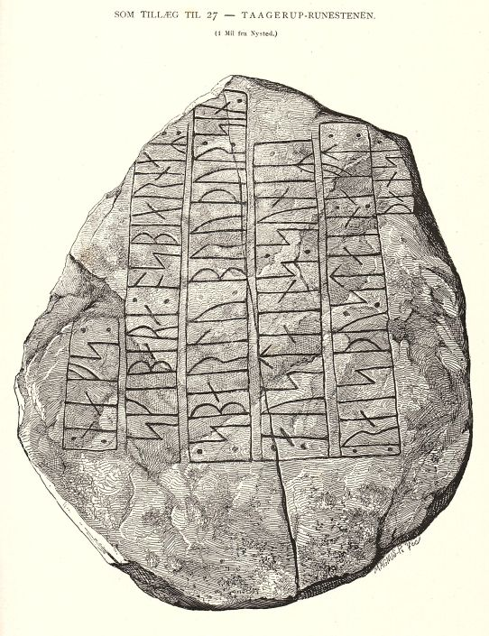
Bildquelle: Scan aus dem in meinem Besitz befindlichen Exemplar.P. G. Thorsens Nachlass (Bezeichnet als: P. G. Thorsens optegnelser, tegninger m.m. vedrørende runer og runemindesmærker - überführt aus der Kopenhagener Universitätsbibliothek 1929 - Gemäß Ministerialschreiben vom 04.03.1929; früher benannt als Additamenta 612 kvart) - findet sich heutzutage in der Königlichen Bibliothek in Kopenhagen unter NKS 3296 kvart (in mehreren einzelnen Pappschachteln). In der Pappschachtel Nr. 1 fand ich dort bei meinen Studien am 27.09.2022 zu Tågerup etliche Aufzeichnungen.


Darunter befindet sich die erste schriftliche Erwähnung zu dem Runenstein, ein handschriftlicher Brief vom 29.03.1868 von Christian Frederik Herbst (*07.04.1818 - 02.07.1911, Archäologe, Numismatiker und Museumsdirektor).
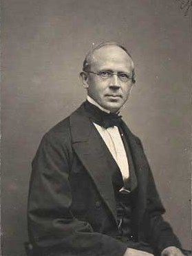
Bildquelle: Wikipedia - Lizenz: Public DomainDarin berichtet er an Thorsen, dass er seinerseits einen Brief vom örtlichen Pfarrer Jessen erhalten hatte, der ihm von der Entdeckung des Runensteins berichtete. Weiter erwähnt er eine Bleistiftzeichnung des Pfarrers die er mit dessen Brief erhielt (siehe unten). Darüber fügte er in den Brief eine eigenhändige Abschrift von dessen Zeichnung ein. Danach geht er auf die Steinmaße - 2 Ellen im Durchmesser und 1/2 Elle dick (Anm.: 1 Elle = 62,77 cm) - ein. Auf der zweiten Seite seines Briefes erklärt Herbst u.a., dass sich die Runen laut Pfarrer Jessen sehr gut erhalten hätten
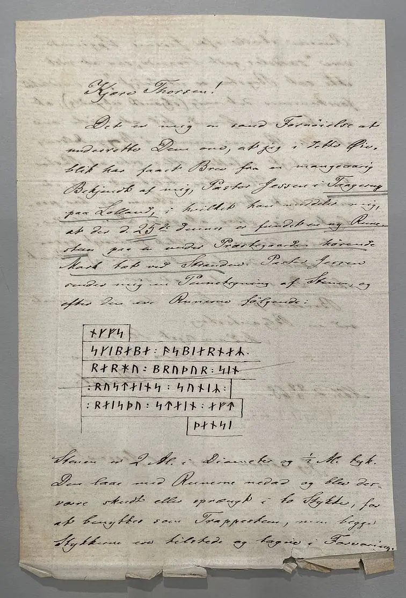
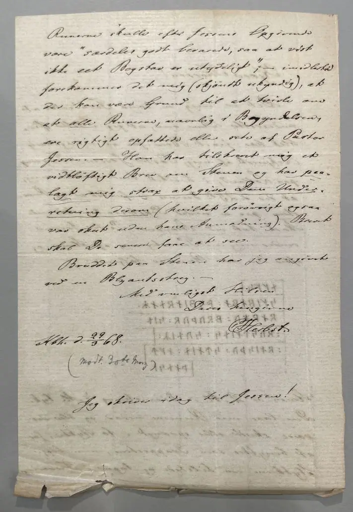
Diesem Brief war eine Zeichnung von Pfarrer Jessen beigelegt, die dieser auf den 31. März 1868 datiert hat.
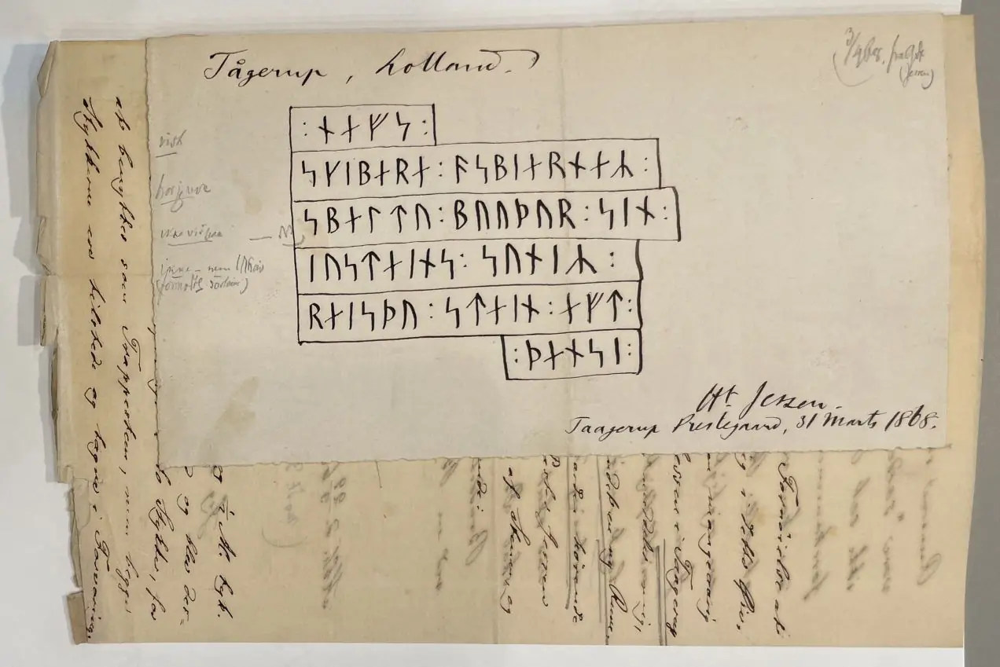
Nach meinen Online Recherchen handelt es sich bei dem Pfarrer um Hans Medor Laurits Jessen (*21.09.1813 - 16.01.1876, Pfarrer in Vigsnæs, später in Tågerup-Torslunde). Sein Grab-/stein findet sich offenbar noch heute im Kirchhof südlich der Kirche von Tågerup. Da werde ich bei meinen nächsten Besuch sehr gerne mal vorbeischauen.
In der weiteren Pappschachtel mit der Nummer 18 fanden sich zu dem Runenstein erfreulicherweise diese beiden Zeichnungen.
Die eine - leider undatierte - Zeichnung stammt von Jacob Kornerup (*19.11.1825 - 09.03.1913, dänischer Archäologe und Zeichner)
 Bildquelle:
Wikipedia - Lizenz:
Public Domain
Bildquelle:
Wikipedia - Lizenz:
Public Domain
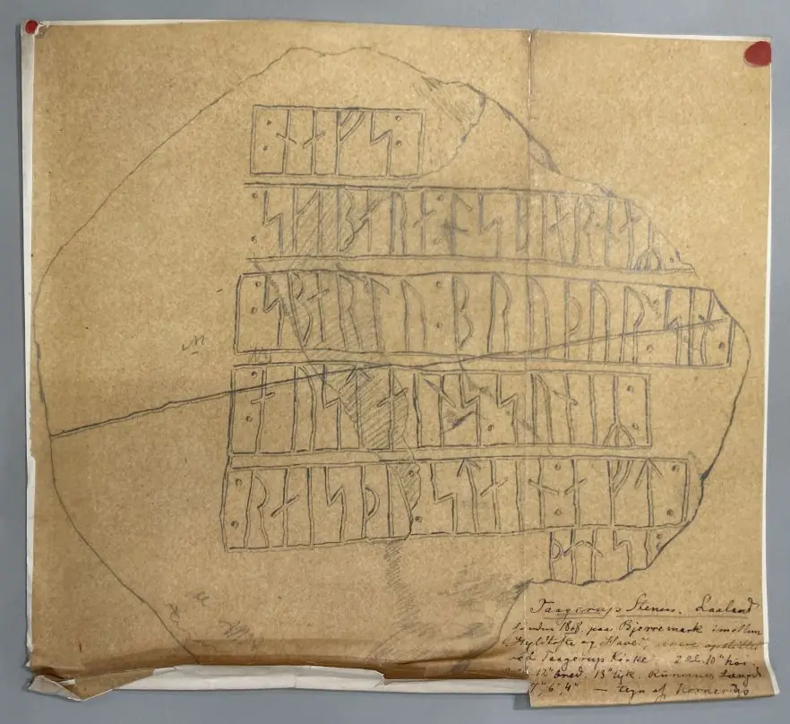
Die andere tolle Zeichnung ist von Magnus Petersen, die er auf den 15. September 1871 datiert hat.

Magnus Petersen erwähnt in seinen Lebenserinnerungen, die den Titel ""Minder fra min Virksomhed paa Arkæologiens Omraade fra 1845 til 1908" tragen, auf der S. 51 kurz, dass er diesen Runenstein gezeichnet hat - "...derefter drog jeg til Laaland for at tegne Taagerup, Skovlænge, Tillitse og Sæddinge Runestenene...". Übersetzung: "...Dann ging ich nach Lolland, um die Runensteine Taagerup, Skovlänge, Tillitse und Sæddinge zu zeichnen...".
Ludv. F. A. Wimmer (*07.02.1839 - 29.04.1920, Philologe und Runenforscher)
 Bildquelle: Fotografie
zw. 1877-1900 von Fotograf Hansen & Weller -
Det Kgl. Biblioteks billedsamling - Lizenz:
Public Domain
Bildquelle: Fotografie
zw. 1877-1900 von Fotograf Hansen & Weller -
Det Kgl. Biblioteks billedsamling - Lizenz:
Public Domain
bringt seine Studien zu diesem Runenstein in seinem großen Werk mit dem Titel "De danske runemindesmærker undersøgte og tolkede af Ludv. F. A. Wimmer, Andet Bind, Runestenene i Jylland og på øerne. 1899-1901" auf den S. 411-414. Er hat den Runenstein persönlich vor Ort am 29. Juli 1879 zusammen mit Magnus Petersen untersucht. Er schreibt in seinem Beitrag, dass der Stein zurechtgehauen werden sollte um als Treppenstufen zu dienen. Nachdem die Runenzeichen entdeckt worden waren wurde der Stein durch die Fürsorge von Pfarrer Jessen gerettet und zur Kirche verbracht. Er hätte dort zwar einen guten Platz erhalten, sei aber falsch platziert worden, da er nun auf der rechten Seite liege. Die Inschrift, die durch die Spaltung nichts verloren hätte, da die beiden Teile gut zusammenpassten, sei sehr deutlich und lasse keinerlei Zweifel aufkommen. Auf der S. 413 gibt er dkiese Zeichnung von Magnus Petersen wieder, die er noch etwas überarbeitet hat.
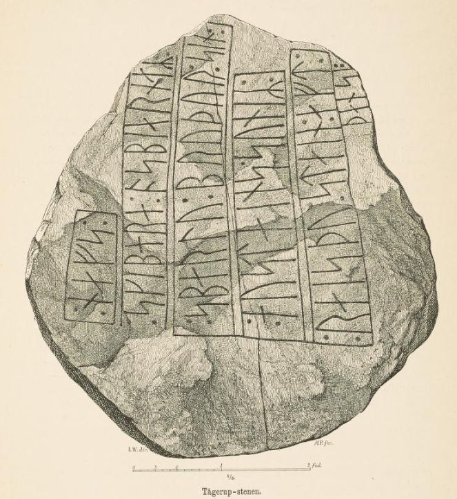
Ludv. F. A. Wimmer hat seine jahrelangen Aufzeichnungen der "Kgl. Bibliotek" in Kopenhagen überlassen. Ein Verzeichnis darüber wurde 1915 in Buchform herausgegeben - "Collectio runologica Wimmeriana: Fortegnelse over Ludv. F. A. Wimmers runologiske o.a. Samlinger i Det kgl. Bibliotek".
In seinen Unterlagen in der Königlichen Bibliothek in Kopenhagen befinden sich unter "III - Originaltegninger af de danske Runemindesmærker, udførte paa Undersøgelsesrejserne af Magn. Petersen og kontrollerede paa Stedet af Ludv. Wimmer, samt Prøvetryk af de paa Grundlag af de nævnte Tegninger, Aftryk o. s. v. til De danske Runemindesmærker" udførte Afbildninger med Wimmers Rettelser" zu dem Runenstein von Tågerup unter der Nr. 91 eine Zeichnung von 1879, die ich am 27.09.2022 fotografieren durfte.


Die Zeichnung, die als Vorlage für den o.a. Druck diente, ist handsigniert von Magnus Petersen (*04.09.1827 - 01.02.1917, Archäologischer Zeichner und Restaurator) und mit dem Datum vom 29.07.1879 versehen.
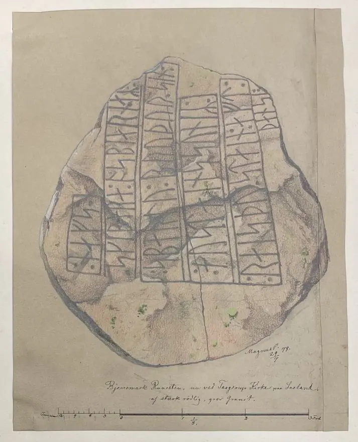
Dieses Foto fertigte Erik Moltke (*04.04.1901 - 19.10.1984, Runologe, Historiker) am 12.04.1931 an.
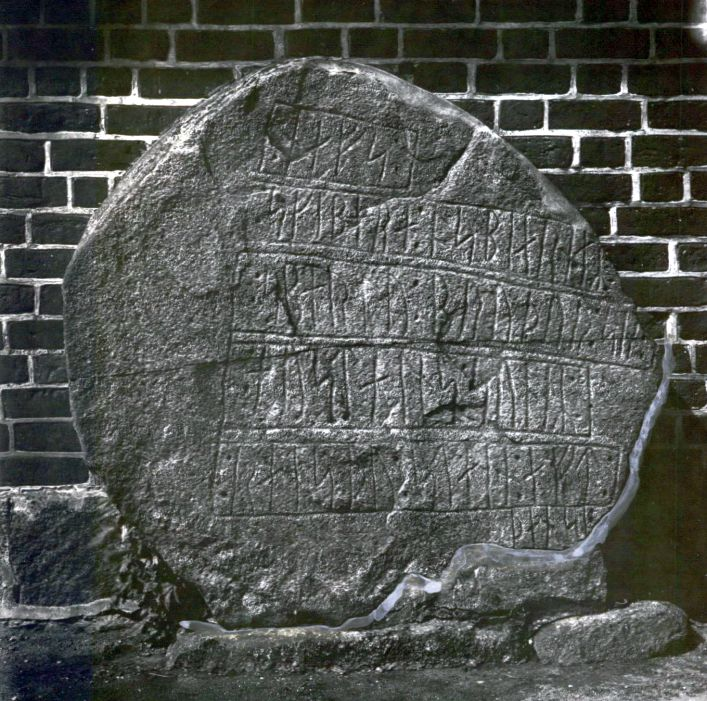
Lizenz: CC-BY-SA - Foto aus: Digitale Sammlung Nationalmuseum Kopenhagen
Im Vorfeld zu dem 2016 erschienenen Buch von Lisbeth M. Imer (*1973, Runologin am Nationalmuseum Kopenhagen) "Danmarks Runesten - en fortælling" reiste sie mit dem Fotografen Roberto Fortuna zur Bestandsaufnahme durch die Lande. Dieser hat die Runensteine mit Schräglicht aufgenommen und darüber wirklich herausragende Fotos erzielt. Diese Foto entstand am 15. März 2012.
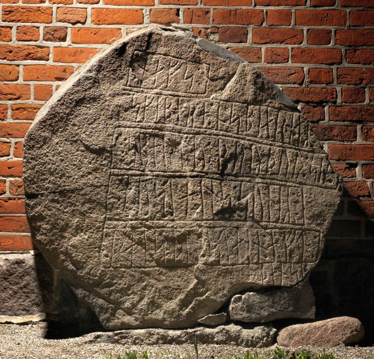
Lizenz: CC-BY-SA - Foto von Roberto Fortuna aus: Digitale Sammlung Nationalmuseum Kopenhagen
Im Internet finden sich über die Homepage der dänischen Runendatenbank hier alle Infos zu diesem Runenstein.
Der entsprechende Eintrag zu dem Runenstein in "Fund og Fortidsminder" ist hier verlinkt.
Über diesen Link finden sich zu dem Runenstein Informationen des Forschungsprojektes "Runes" der Akademie der Wissenschaften zu Göttingen.
Auf der Webseite von "Danmarks kirker" findet man zu der Kirche von Tågerup eine 18-seitige sw bebilderte Beschreibung zur Kirche aus dem Jahr 1948.
Literaturhinweise:
Ludv. F. A. Wimmer - De danske runemindesmærker - Handudgave ved Lis Jacobsen - Nr. 84 - S. 107/108 mit Zeichnung
Aarbog Lolland Falster Band XI 1923 - Marius Kristensen - Lålands og Falsters Stednavne II - S. 1 bis 14 (dieser Runenstein S. 12)
Lolland-Falsters Historiske Samfunds Årbog - 1989 - Karen Løkkegaard Poulsen - Runesten på Lolland-Falster - S. 65 bis 86 (dieser Runenstein S. 78/79)